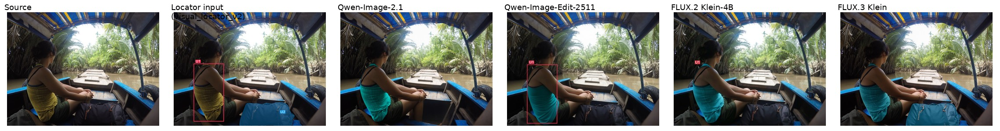
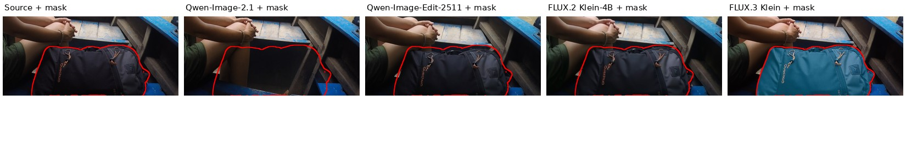

only_one_model_success — v2-sa_10006079
Edit the first image at its original size. Execute all numbered instructions. The second image, when present, supplies labeled locators only; omit those marks from the result. A locator selects a source instance; named parts further restrict the edit. For add it selects the support or spatial reference, not the new item outline. Preserve all unrequested content. U1 [ref; box]: Change the color of the woman’s yellow patterned tank top to teal. U2 [no ref; mask]: Remove the selected region.

U1: Change the color of the woman’s yellow patterned tank top to teal.

E: The woman's tank top, originally yellow with a small dark dot pattern, is recolored to teal/green across the entire visible garment body and shoulder strap area, matching the masked region; geometry and pattern texture are retained.
P: Skin, hair, black bra strap, blue-gray trim band, green shorts, blue boat seat, river and palm background are unchanged outside the recolored top.
Q: The teal recolor keeps the original knit/dot texture, edge trim and shading, so the garment looks naturally lit and consistent with the scene.
E: The woman's tank top is recolored from the yellow cross-hatch pattern to a solid teal/cyan, with the black shoulder straps, neckline trim, skin, hair and green shorts left intact; geometry of the garment is preserved.
P: A red 'U1' locator box and label are drawn directly over the torso/tank-top region in the output (visible in both the full image and the U1 crop); this is unrequested editor-produced marker content covering the edited unit.
Q: The teal fabric shading and edges are otherwise natural, but the superimposed red rectangle/label is a visible artifact that damages the image within the edited region.
E: The yellow patterned tank top is recolored to teal/cyan while retaining the same small dark pattern, geometry, neckline and shoulder strap; the black bra strap and skin remain unchanged, matching the requested attribute change.
P: A red 'U1' label marker (editor artifact) appears over the woman's upper back/shoulder area inside the U1 crop, an unrequested overlay that damages preserved content near the target.
Q: The teal recolor itself is coherent, but the bright red 'U1' text box is a visible non-photographic artifact that breaks the natural look of the edited region.
E: The woman's yellow patterned tank top is recolored to teal/cyan across the entire garment including the upper strap area, while the woven pattern texture is retained; the requested attribute change is complete on the correct instance.
P: Skin, hair, black bra strap, green shorts, blue boat bench, tire and riverbank foliage are unchanged; the recolor stays within the tank-top boundary with no spill onto arms or seat.
Q: The teal fabric keeps the same knit texture, shading and edge blending against the skin and strap, looking like a naturally lit teal top rather than a flat fill.
U2: Remove the selected region.

E: The black Quechua duffel bag that filled the lower-center/right of the boat is fully removed, leaving no leftover fragments or straps; the masked region is cleared.
P: The woman's hands, bracelet, legs, green shorts, wooden planks, blue seat edge and right-side wooden support beam are all preserved around the removed bag.
Q: The revealed area is a dark shadowed boat interior with coherent edges and occlusion by the legs, plausibly matching the unlit hull cavity.
E: The black Quechua duffel bag with orange drawstrings is still fully present in the output crop; the requested removal was not performed at all.
P: The woman's hands, legs, bracelet, boat planks and blue bench around the bag region are unchanged from the source.
Q: The bag region is the untouched original, so it shows no editing artifacts (lighting, texture and occlusion remain coherent).
E: The black Quechua duffel bag with orange drawstrings, zipper and gray side panel is still fully present in the output, identical to the source; the requested removal was not performed.
P: No pixels in the U2 region were altered, so the hands, bracelet, shorts, wooden planks and blue bench around the bag are exactly preserved.
Q: The U2 crop is unchanged from the source and contains no editing artifacts or unnatural material in this region.
E: The instruction was to remove the black Quechua duffel bag, but in the output the bag is still fully present and merely recolored from black to teal; the targeted object was not removed, so the removal operation is not completed.
P: Neighboring content (hands, bracelet, legs, green shorts, blue boat planks and seat) is preserved and the recolor stays inside the bag silhouette without spilling onto surrounding objects.
Q: The recolored teal bag itself looks coherent in material, zipper and logo placement, but it is the wrong operation (recolor instead of removal), so naturalness is only marginally acceptable.